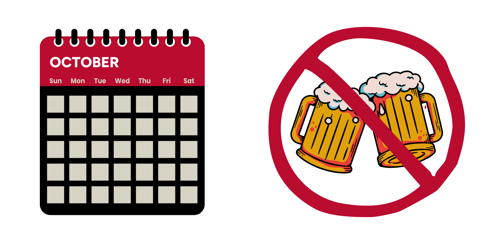

Sober October Study
Researchers at the University of Georgia are looking for adults who plan to quit drinking for Sober October to participate in an online research study.

Fast Facts
Adults Who Drink Alcohol Regularly
Plan to Participate in Sober October
Compensation Provided
Conducted Remotely
Study Background
Help researchers at the University of Georgia understand why people take part in Sober October and its long-term effects.
Many people take part in “Sober October,” a month-long challenge where individuals voluntarily stop drinking alcohol. Researchers are interested in understanding the thoughts, feelings, and behaviors that influence participation and success in this kind of alcohol-free challenge and what, if any, are the long-term effects of participation.
If you’re 18 or older, planning to stop drinking for Sober October, and have a history of regular alcohol use, you may be eligible. Your participation can help us learn how people make meaningful changes to their drinking, and you can do it all from home. Over the course of the year, you will complete eight online surveys for up to $240.
How It Works
Step 1: Complete a short eligibility survey online
Step 2: If eligible, you will be invited to a virtual meeting with the study team
Step 3: During screening, you will be asked to provide a valid U.S. form of identification to confirm eligibility
Step 4: If enrolled, you will complete online surveys throughout the study period
Frequently Asked Questions
Why is this study being done?
This study is being done to better understand how people think, feel, and behave before, during, and after participating in events like Sober October. By learning more about people’s experiences with taking a break from alcohol, researchers hope to find new ways to support individuals who are curious about changing their drinking habits.
Is this study for me?
- Ages 18+
- Drink alcohol regularly
- Plan to participate in Sober October (going alcohol-free for the entire month of October)
- Speak English
- Willing to use a smartphone/tablet for the study
- Have access to a valid U.S. mailing address
What will happen if I participate in the study?
- A 1-hour survey at the beginning of the study
- 20 minute-surveys each week during Sober October
- A 1-hour follow-up survey 3 months later
- A 1-hour follow-up survey 6 months later
- A final 1-hour survey 12 months later
Will I be paid for being in this research study?
You can earn up to $240 in total. Payment will be provided as electronic gift cards.
- Baseline Survey (1 hour): $30
- Weekly Surveys (20 min each): $15 each
- Completion Bonus (all weekly surveys): $25
- 3-Month Follow-Up Survey (1 hour): $35
- 6-Month Follow-Up Survey (1 hour): $40
- 12-Month Follow-Up Survey (1 hour): $50